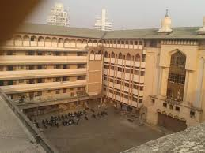

ANJUMAN-I-ISLAM'S
M.H.SABOO SIDDIK COLLEGE OF ENGINEERING

The college was established with a definte mission to disseminate a value-oriented quality technical education among our youth to fulfil the increasing demand of human resources for the ever-growing engineering industry of our nation, which it has truly proved to the core.
The Mohammed Haji Saboo Siddik Institute (A Muslim Minority Institution) owes its existence to the munificence of late Mohammed, son of Haji Saboo Siddik, who bequeathed a large sum of money for establishing, conducting and managing this Institution for imparting Vocational, Technical and Industrial training and education. The value of the assets, so bequeathed, exceeded Rupees Three Crore at the time of donation.
The Institution is managed and administrated by the Anjuman-i-Islam as the sole trustee, appointed by the Bombay High Court's decree and scheme framed and sanctioned thereunder.
The very well laid out college building accommodates workshops, laboratories, classrooms, lecture halls, drawing halls, students' common room, seminar hall, library, reading-rooms, offices, etc. with modern facilities. The College is accommodated in an exclusively newly-constructed spacious ground plus five floors building. The library of the College is housed in a separate newly-constructed building and is furnished with reference section and reading-rooms for students and staff. A very sophisticated Seminar Hall furnished with the most modern equipment was inaugurated by Dr. Raja Ramanna, an eminent scientist of our country, on the annual day celebrations on 9th April, 2001. A spacious and well-furnished cafeteria is also operative in the campus.